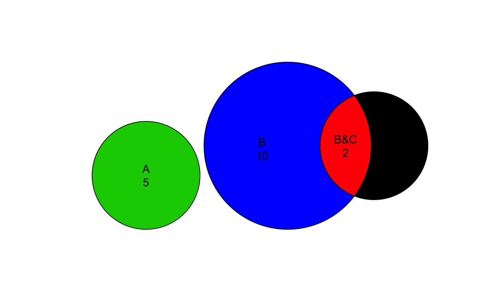

Find Venn polygon overlaps
find_vennpoly_overlaps( sp, venn_counts = NULL, venn_items = NULL, venn_colors = NULL, sep = "&", preset = "dichromat", blend_preset = "ryb", sp_nudge = NULL, rotate_degrees = 0, do_plot = FALSE, verbose = FALSE, ... )
| sp |
|
|---|---|
| venn_counts |
|
| venn_items |
|
| sep |
|
| preset, blend_preset |
|
| sp_nudge, rotate_degrees | passed to |
| do_plot |
|
| verbose |
|
| ... | additional arguments are passed to supporting functions
|
sp::SpatialPolygonsDataFrame object, with
additional columns:
"label"
"venn_counts"
"venn_color"
"x_label"
"y_label"
This function takes a named list of polygons and returns the combination of polygon overlaps as used in a Venn diagram.
When a vector of Venn counts is supplied, the
counts are associated with the respective polygon,
and any counts not represented by a polygon
are returned as an attribute "venn_missing".
Other venndir utility:
curate_venn_labels(),
eulerr2polys(),
get_largest_polygon(),
get_venn_shapes(),
intersect_polygons(),
label_polygon_fill(),
make_color_contrast(),
make_venn_combn_df(),
make_venn_test(),
match_list(),
nudge_sp(),
print_color_df(),
rescale_coordinates(),
rescale_ps(),
rescale_p(),
rescale_sp(),
shrink_df(),
sp_circles(),
sp_ellipses(),
union_polygons()
# simple Venn circles test_counts <- c(A=5, B=10, C=3, `B&C`=2) sp <- get_venn_shapes(counts=test_counts, proportional=TRUE) # Venn overlap polygons spdf <- find_vennpoly_overlaps(sp, venn_counts=test_counts) # behold the data.frame annotations data.frame(spdf)#> color label venn_counts venn_color x_label y_label #> A #D92029FF A 5 #D92029FF -2.65554699 -0.5077754 #> B #FFB600FF B 10 #FFB600FF 0.05875196 0.1123266 #> C #0091FFFF C 3 #0091FFFF 3.26938168 0.1394788 #> B&C #8BB47BFF B&C 2 #8BB47BFF 2.00960662 0.1850620